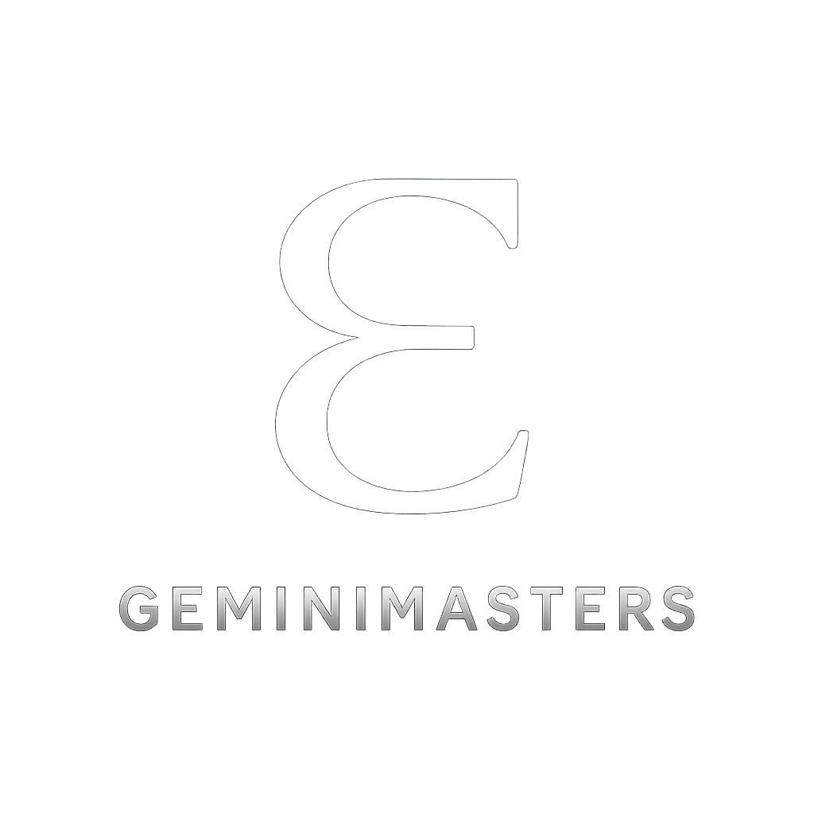

A unified reading in The Master's Voice – Western Astrology, Human Design, Vedic Astrology, BaZi, and Numerology aligned into one, coherent and personalised map. Not a forecast. A rediscovery of the cosmic design that has always been yours.
Western astrology describes your lived personality and life themes — how your psyche expresses itself through archetype, relationship, and choice.
Your Sun in Gemini in the 1st house points toward a life of visible curiosity, communication, and self-definition. The Midheaven is in Aquarius, suggesting a public path that may involve independent thinking, fresh approaches, or contributing to a wider community without simply following convention. The Aries North Node in the 12th house adds an inward dimension to that purpose. You are here to develop quiet self-trust, then bring the clarity of your own perspective into the world. Your purpose is not to be available to everyone at all times; it is to speak and act from a center that belongs to you.
Your chart holds a tension between visible self-direction and private emotional needs. With the Sun and Mars in the 1st house, you may feel compelled to respond, explain, or act on your own terms. The Taurus Moon in the 12th house, however, needs solitude and emotional steadiness before it can fully name what is happening. Mercury in Gemini in the 2nd house links your voice and judgment to questions of value, security, and self-worth. You may think through practical concerns from several angles, but too much analysis can delay a decision. At this stage of life, the task is not to silence your quick mind; it is to let your body and deeper feelings have a say before you commit.
Your mean North Node is in Aries in the 12th house, and your mean South Node is in Libra in the 6th house. The true North Node is also in Aries in the 12th house, with its position differing slightly from the mean node. Both models point toward the same growth direction: developing inner courage and a more direct relationship with your own instincts, especially away from constant service, adjustment, or approval-seeking. Saturn in Aries in the 12th house deepens this work. You are learning to act from an inner conviction even when no one is watching and no immediate reassurance is available. Rest, private reflection, and honest solitude can help you distinguish true independence from defensiveness or withdrawal.
Gemini gives you verbal agility, curiosity, and the ability to make connections between ideas. Mercury in its own sign in the 2nd house can support clear thinking about skills, resources, and what you value. Mars in Gemini in the 1st house adds initiative through words and questions, while Taurus rising and Venus in Taurus offer steadiness, sensory awareness, and loyalty. Your earth emphasis helps you make ideas practical, and your mutable emphasis helps you adjust when circumstances change. When you are aligned, others may experience you as engaging without being overwhelming, dependable without being rigid, and able to explain complicated matters in a direct, useful way.
The Libra South Node in the 6th house can describe a familiar pattern of keeping the peace through usefulness: noticing what others need, smoothing friction, and trying to make daily life fair for everyone. This can be a real strength, but it may become draining when you treat harmony as your responsibility. Saturn in the 12th house suggests that unspoken fears or private pressure may build when you postpone your own needs. Pluto and Uranus in Virgo in the 5th house add intensity and unpredictability to creative expression, pleasure, and the wish to be recognized for what is distinctly yours. Across relationships and work, notice when helpfulness becomes a way to avoid stating a desire plainly.
Needing quiet does not mean you are disengaged, and taking time to feel does not make you indecisive. Your Taurus Moon processes experience at its own pace; it often needs dependable routines and privacy before it can settle. You do not have to earn belonging by being endlessly accommodating. The growth in your chart is not a rejection of cooperation, but a more balanced form of it: you can care about others while still naming what you want and choosing what is yours to carry.
Human Design maps your energetic mechanics — how your system is built to make decisions, use energy, and move through life with less resistance.
You are here to bring responsive energy, instinct, and emotional awareness into the relationships and communities you join. The Left Angle Cross of Duality highlights the way difference and contrast can reveal what needs balance, especially in connection with others. Your contribution is not to keep everyone comfortable or to carry every shared responsibility; it is to act when life gives you something real to respond to, and to build fair exchanges that respect both care and independence.
Your central tension is the speed of your Manifesting Generator energy against the slower clarity of Emotional Authority. You may feel ready to move, speak, or promise something before your emotional wave has settled; urgency is not the same as a clear yes. Your strategy is to wait to respond, and then give people affected by your actions a heads-up when appropriate, rather than trying to initiate from pressure. Your undefined Head and Ajna can make other people’s questions or certainty feel like problems you must solve. The undefined G may bring periods of uncertainty about identity, direction, or belonging, while the undefined Root can amplify pressure to hurry and finish. These centers are not empty or defective; they are places where you can take in and magnify surrounding influences, so discernment matters.
Your growth comes from allowing response and emotional clarity to work together. Notice what catches your Sacral attention, then give consequential choices enough time for your feelings to shift and settle; you do not need to decide at the first spark. This lets your natural speed serve a choice you can stand behind. The 6/2 profile also asks you to respect both engagement and retreat. You learn through real experience, but you need solitude to recognize what those experiences have taught you and to restore your own rhythm. As you stop treating every pause as avoidance, your perspective becomes steadier and your contribution more useful to others.
Your defined Sacral supports sustained energy for work and experiences that genuinely engage you. The 20–34 channel connects that energy to direct expression and action, while 20–57 and 34–57 bring instinctive awareness close to the present moment. Others may experience you as quick, capable, and alert to what is happening now; your best results come when that immediacy is paired with the patience your Emotional Authority requires. Your defined Solar Plexus gives you a consistent emotional nature, and the 37–40 channel supports warmth, loyalty, and a strong sense of exchange. Your defined Heart/Ego can bring focused will when you choose a commitment that is truly yours. With a 6/2 profile, you can become a grounded example through lived experience, while your need for privacy protects the time it takes to develop that perspective.
The 20–34 and 20–57 channels can create a powerful present-moment response: you may see or sense what needs doing and move before others have caught up. When aligned, this is effective instinctive action. Under pressure, it can become impatience, abruptness, or confidence in a first impulse that has not yet passed through your emotional process. The 37–40 channel can draw you into strong expectations around loyalty, support, and reciprocity. You may give a great deal to a family, team, or partnership and then feel depleted if the agreement was never made explicit. Your 6/2 profile adds a recurring pull between being called into visible participation and wanting to withdraw; neither role is a failure, but resentment can build when you ignore your need for rest or agree to obligations without clarity.
Your Sacral response can tell you whether energy is available, but your Emotional Authority guides the timing of a meaningful commitment. Let the initial response begin the process rather than end it. Clarity is more dependable after the emotional wave has had room to move. Your instinct can be quick without making every decision urgent. You can honor what you sense now and still wait before making a promise. A pause does not cancel your energy; it helps you use that energy with greater care. You are not required to maintain one fixed identity or direction to be trustworthy. Your undefined centers let you notice and learn from changing environments, while your defined centers provide consistent ways of acting, feeling, and relating. Make agreements explicit, and allow solitude to restore the perspective you gain through experience.
Vedic astrology reveals your karmic blueprint and life timing — showing what ripens beneath the Western chart through dharma, karma, and dasha cycles.
Your dharma is to bring steadiness, discernment, and practical value into the places where people need something reliable. Taurus rising and a Taurus Sun favor work that can be sustained and made tangible. The Moon in Krittika adds the ability to identify what needs attention; Venus in its own sign supports artistry, relational intelligence, and the creation of comfort or beauty with substance. The eleventh-house emphasis points toward contribution beyond the private self: communities, shared goals, and networks shaped by what you can consistently offer. Your purpose is not simply to accumulate security or influence. It is to use your resources, judgment, and presence in ways that strengthen others without surrendering your own standards.
You are in Saturn Mahadasha, running from February 2023 to February 2042. Saturn is in Pisces in your eleventh house with Rahu, bringing long-term attention to friendships, networks, collective aims, and the gains that come through sustained effort. This period asks you to distinguish meaningful contribution from the pressure to belong, achieve, or keep pace with other people’s expectations. Saturn’s work is gradual: commitments become real through consistency, boundaries, and accountability. Rahu beside Saturn can intensify ambition and widen your reach, while also making social or professional goals feel unusually urgent. The central test is to build connections and plans that remain sound after the excitement fades. Mercury Mahadasha follows in 2042, shifting emphasis toward learning, communication, skills, and practical exchange; the groundwork you lay now can give that later period a clearer direction.
Your growth comes through learning that stability does not require standing still. Taurus gives you a strong instinct for what is worth preserving, while Krittika asks you to remove what has become untrue or unworkable. Saturn’s current period makes that discernment consequential: you are learning to honor responsibility without carrying every burden, and to pursue lasting goals without measuring your worth by visible results. Jupiter in Leo in your fourth house supports the slow creation of a more generous inner foundation. Home, family, education, or the search for emotional rootedness may become important sources of perspective. Let discipline serve what you value, rather than turning discipline into a reason to deny your needs.
Venus in Taurus in the first house is a strong support for warmth, aesthetic sense, and the ability to make value visible. It can help you build trust through consistency and express care through concrete acts. Jupiter in the fourth house offers perspective and generosity around home, learning, and emotional grounding, while Mercury in Gemini in the second supports communication, quick understanding, and skill with words or resources. Krittika gives you a gift for separating what matters from what distracts. Mars in Taurus adds persistence: once your energy is committed, you can keep moving through obstacles that would exhaust a less patient person. These gifts work best when you allow reflection before action and let your standards guide your choices without hardening into perfectionism.
BaZi reveals your elemental constitution and life cycles — showing how resources, pressure, and timing interact so you can work with the seasons of your fate.
You are suited to work that joins initiative with sound judgment: building something, improving a process, guiding people through a practical challenge, or turning experience into useful knowledge. Your Yang Fire can bring clarity and momentum; the strong Metal presence can help you recognize what has value and what needs to change. The Wu Shen year and Bing Shen day connect your contribution to both the wider world and personal trust. The Ding Si month adds heat and determination, while the Geng Yin hour points toward future-oriented choices involving resources and growth. Your contribution is strongest when your standards serve a meaningful aim and your ambition leaves room for other people’s judgment and needs.
Fire gives you momentum; Metal gives you a strong eye for results, standards, and resources. The tension can arise when you move quickly but also expect the outcome to be measurable and well controlled. You may feel pressure to prove your value through productivity, skill, or the ability to solve problems without delay. The Ten Gods add a social dimension. Eating God points toward expression, craft, and the satisfaction of making something well. Friend and Rob Wealth themes can bring loyalty and initiative, but also comparison or friction over shared authority and resources. With Water absent, pausing, listening to limits, and allowing uncertainty to remain unresolved may take deliberate practice.
Your growth comes from adding steadiness to your natural intensity. Build in time to reflect before committing, especially when a decision involves money, partnership, or a promise that will be difficult to revise. A clear schedule, written agreements, and regular rest can help your energy serve your aims rather than outrun them. Water is the least emphasized element, so cultivate its practical qualities: patience, careful listening, and the ability to adjust course without treating change as defeat. Wood is also limited; support it through learning, mentoring, and projects that develop over time. You do not need to become less decisive. You need enough space around your decisions to choose them well.
You have the capacity to make a clear impression, mobilize effort, and notice where a practical opportunity exists. Fire supports visibility and initiative; Metal supports assessment, resourcefulness, and the ability to make a result tangible. Together, they can make you persuasive without relying on force when you are grounded in what you know. Eating God adds a gift for expression and craftsmanship: you can take satisfaction in developing an idea or skill until it becomes useful to others. Friend themes support solidarity and direct engagement with peers. Your Yin hour offers a quieter strength too: the willingness to keep learning and to invest in what can grow beyond immediate recognition.
The repeated Shen branch can echo a pattern of meeting life through capability: you assess what is happening, find the leverage point, and act. This is useful in demanding settings, but it can make closeness feel like another problem to manage. In relationships, notice whether you are sharing what you feel or only presenting what you can handle. At work, Eating God supports making and communicating, while Indirect Wealth in the hour can draw you toward opportunity, strategy, and practical gain. Friend and Rob Wealth themes may bring strong peers and collaborators, along with moments when competition, credit, or control becomes charged. Your recurring lesson is to distinguish healthy self-reliance from the belief that you must carry everything yourself.
The balance of Fire and Metal is not a contradiction. Fire brings conviction and visibility; Metal helps you judge, refine, and make choices with practical consequence. You can be warm and exacting at once. The strain appears when discernment turns into constant evaluation, including of your own worth. Water’s absence describes a quality to develop, not a flaw in your character. You may need to schedule recovery and reflection rather than wait until exhaustion makes them unavoidable. Your pattern becomes more sustainable when rest is treated as part of good judgment, not as a reward for finishing everything.
Numerology translates your soul’s frequency into a life path — clarifying your core drives, lessons, and the kind of impact you’re here to mature into.
Your Life Path 1 points toward initiating, choosing, and developing a clear sense of direction. Your Expression 7 adds a purpose of seeking truth, examining what others accept without question, and offering insight grounded in careful thought. Together, these numbers suggest leadership shaped by discernment. As your 8 Maturity develops, your work may carry greater authority or practical impact. Your purpose is not simply to be first; it is to make independent judgment useful and responsible.
No current cycle number is available, so the clearest challenge comes from the tension among your core numbers. The double 1 asks you to lead from your own judgment, while the 7 needs solitude, evidence, and time to understand. The 6 Personality can add pressure to be available, helpful, or responsible even when you need space. Your Birthday 8 and Maturity 8 heighten the question of how you use influence and manage responsibility. The challenge is not to choose between care and independence, but to set limits before generosity turns into resentment and to lead without feeling you must carry everything alone.
Your growth lies in letting independence become self-trust rather than isolation. The 1 is strongest when it can initiate and still listen; the 7 is clearest when reflection leads to useful action instead of endless private analysis. The Vector moves from 1 through 7 and back to 1, then toward 8: personal drive is refined by inquiry, expressed through independent direction, and matured into responsible authority. You are invited to use ambition with fairness, and to let your leadership create more capacity in others rather than making you indispensable.
You have the courage to begin, the focus to investigate, and the stamina to take responsibility for results. The 1 brings initiative, the 7 brings depth and analysis, and the 8 adds practical strength when a goal requires sustained effort. Your 6 Personality can make your presence reassuring and considerate. At your best, you combine that care with clear boundaries, so support does not become self-neglect. You can be both warm and self-directed.
Your birth-date total is 19, which is associated in numerology with a karmic-debt pattern. It can point to lessons around self-reliance, pride, and receiving support: you may swing between doing everything yourself and feeling unseen when others do not step forward. The repeated 1 reinforces initiative, but can make compromise feel like a loss of freedom. The paired 8s bring recurring lessons about power, money, recognition, and accountability. These are not fixed outcomes; they are areas where conscious choices matter.
Your need to stand on your own does not mean you lack care for others. The 6 Personality helps explain why people may see you as dependable and nurturing, while the two 1s explain why you still need room to choose your own direction. The 7 in your Expression gives you a thoughtful, discerning way of contributing. You are not required to reveal every thought or answer every question quickly. Taking time to understand something is part of how you work well. Your 8 Birthday and 8 Maturity point toward growing comfort with responsibility and tangible results. You can respect your ambition without judging yourself for wanting influence, security, or recognition; the key is to use them with integrity.